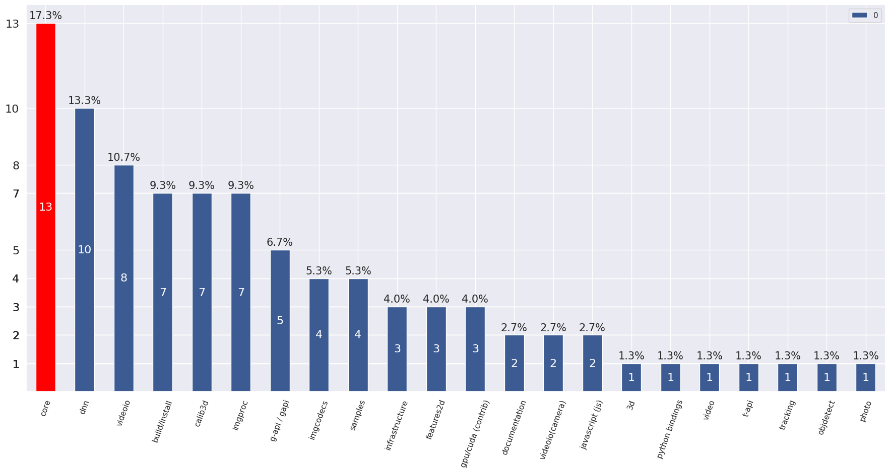

Categories distribution¶
Overview¶
Total percentage may exceed 100%, because several categories may be assigned to 1 pull request. 
Pull requests with auto assigned categories¶
Categories are assigned based on path of the changed files.
PR#19860: fix test_cameracalibration bug
Assigned categories: (‘calib3d’,)
PR#19859: Fix Single ThresholdBug in Simple Blob Detector
Assigned categories: (‘features2d’,)
PR#19856: Remove virtual inheritance from Feature2D
Assigned categories: (‘features2d’,)
PR#19854: Add maxIters parameter to LMeDS method in findFundamentalMat
Assigned categories: (‘calib3d’,)
PR#19847: Expose maxIters in findEssentialMat
Assigned categories: (‘calib3d’,)
PR#19842: Change type used in points function from RotatedRect
Assigned categories: (‘core’,)
PR#19838: IPP: use linker workaround for Intel compiler on Linux
Assigned categories: (‘build/install’,)
PR#19836: delete unused variable
Assigned categories: (‘imgproc’,)
PR#19810: Relax accuracy requirements in the OpenCL sqrt perf arithmetic test.
Assigned categories: (‘imgproc’, ‘core’)
PR#19778: Master riscv 0.7.1
Assigned categories: (‘infrastructure’, ‘core’)
PR#19721: add audio support in cap_msmf
Assigned categories: (‘samples’, ‘videoio’)
PR#19684: Add Octree to 3D module in next branch - in progress
Assigned categories: (‘3d’,)
PR#18874: Revert IPP enabling and workarounds
Assigned categories: (‘imgproc’, ‘infrastructure’, ‘core’, ‘t-api’)
PR#18694: videoio/gstreamer: Add support for GRAY16_LE.
Assigned categories: (‘videoio’,)
PR#17167: QR-Code: Add evaluation sample
Assigned categories: (‘samples’,)
PR#10318: For various PR tests
Assigned categories: (‘videoio’,)